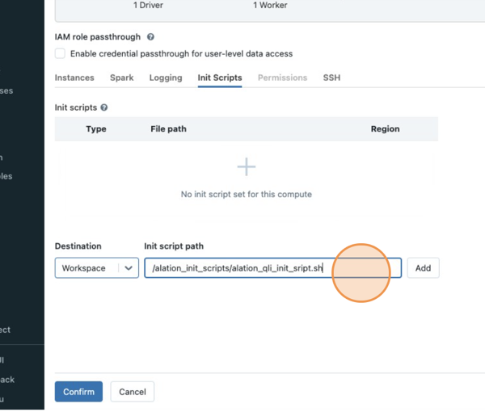

Recreate Databricks Logging Script Under Workspace¶
Alation Cloud Service Applies to Alation Cloud Service instances of Alation
Customer Managed Applies to customer-managed instances of Alation
Use the information on this page to validate your QLI configuration for data sources:
OCF Azure Databricks
OCF Databricks on AWS
Warning
The steps below must be performed by a database administrator (DBA) or in the presence of a DBA.
Databricks has deprecated cluster-scoped init scripts stored on DBFS.
Note
You can find more information about the types of scripts in Databricks documentation.
If you previously followed the steps in Alation documentation to configure query log ingestion (QLI) and saved the init script that enables logging to DBFS, you need to recreate this script under the workspace.
Databricks has provided communication to its customers about deprecating scripts on DBFS and the need to migrate them to be stored under the workspace. Your DBA may have already migrated all the init scripts in bulk using recommendations from Databricks. Thus, there are two scenarios for you to address this change:
If the init scripts on your cluster have not been migrated yet, follow the steps in Recreate Init Script to recreate Alation’s script.
If your DBA has already migrated the init scripts in bulk, you will need to ensure that the migrated script works as expected. Use the information in Validate QLI Configuration.
Recreate Init Script¶
These steps apply to Azure Databricks and Databricks on AWS.
To recreate the script:
Go to your workspace and create a new folder, for example,
alation_init_scripts.Note
You can give the new folder any name. We’re using
alation_init_scriptsas an example.Set the permissions on the folder to be Can Manage for Admins:
Note
We recommend restricting the permissions to Admins only to ensure that unauthorized users cannot manage this folder and modify the init script.
Create a new file with the name
alation_qli_init_sript.sh. Ensure you use the .sh extension.Copy the script given below into the file you created. Check that the pasted content is correct and does not include accidentally added extra spaces or line breaks.
#!/bin/bash
echo "Executing Init script for Alation QLI"
echo "Executing on Driver:"
LOG4J_PATH="/home/ubuntu/databricks/spark/dbconf/log4j/driver/log4j2.xml"
echo "Adjusting log4j2.xml here: ${LOG4J_PATH}"
sed -i '0,/<PatternLayout pattern="%d{yy\/MM\/dd HH:mm:ss} %p %c{1}: %m%n%ex"\/>/s//<PatternLayout pattern="%d{yyyy-MM-dd HH:mm:ss.SS} [%t] %p %c{1}: %m%n"\/>/' ${LOG4J_PATH}
sed -i 's/<\/Loggers>/<Logger name="org.apache.spark.sql.execution.SparkSqlParser" level="DEBUG"\/><\/Loggers>/' ${LOG4J_PATH}
#!/bin/bash
echo "Executing on Driver: $DB_IS_DRIVER"
if [[ $DB_IS_DRIVER = "TRUE" ]]; then
LOG4J_PATH="/home/ubuntu/databricks/spark/dbconf/log4j/driver/log4j.properties"
else
LOG4J_PATH="/home/ubuntu/databricks/spark/dbconf/log4j/executor/log4j.properties"
fi
echo "Adjusting log4j.properties here: ${LOG4J_PATH}"
echo "log4j.logger.org.apache.spark.sql.execution.SparkSqlParser=DEBUG" >> ${LOG4J_PATH}
echo "log4j.appender.publicFile.layout.ConversionPattern=%d{yyyy-MM-dd HH:mm:ss.SS} [%t] %p %c{1}: %m%n" >> ${LOG4J_PATH}""", True)
Configure the cluster to run the new init script. Follow these steps in Databricks documentation:
Note
The Init script path should look like
/<folder_path>/<script_name>.sh, for example,/alation_init_scripts/alation_qli_init_sript.sh:Ensure
Workspaceis selected as the Destination and notDBFS.The
workspacekeyword should not be prefixed to the path.
We recommend deleting the old init script that was saved to DBFS from the cluster configuration:
If the old script only contains Alation’s code, delete it.
If you previously combined other code with Alation’s code that enables logging into one init script, discuss with your DBA if you may delete the whole script. You may need to access the script file on DBFS, remove Alation’s code, and save.
Save the changes to the cluster configuration.
Restart the cluster.
Next, use the recommendations in Validate QLI Configuration.
{kind=link}
{kind=link}
Validate QLI Configuration¶
Use the information in this section to validate the QLI configuration after recreating the init script under the workspace or if your DBA admin migrated the init scripts in bulk and you did not have to recreate it:
Check if the logs are coming as expected into the log storage. The path to the logs is similar to
/cluster-logs/0130-102557-aft119/driver/, where:/cluster-logsis the subfolder in the Azure Storage container (Azure Databricks) or the Amazon S3 bucket (Databricks on AWS).0130-102557-aft119is your cluster ID./driver/is the auto-created directory that stores the log files that Alation will process.
After you’ve ensured that the logs keep being added, in Alation, run QLI for your data source.
Note
There is a delay between writing contents to a log file and converting the log file into a compressed .log.gz file. Before you run QLI in Alation, ensure that your log storage container or bucket has archived logs.
For steps to run QLI, refer to: